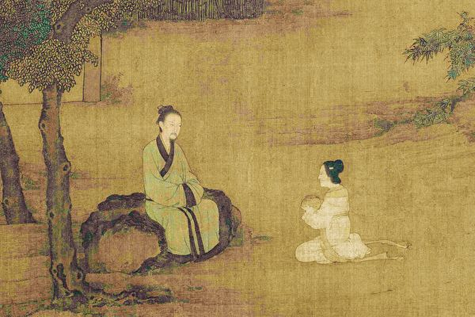

Culture 3
The celebration and respect towards elders within Chinese Culture is very profound. Elders are seen as very wise and knowledgeable people, and often the younger generation will seek their advice on important matters. This respect is deeply ingrained in the culture of not only China, but many other Eastern Asian countries like Korea and Japan.
Origination and Celebration
This respect for elders originates from Confucianism, specifically "孝" (xiào), or filial piety. Filial piety is a belief in Confucianism that one should respect and care for one's parents and ancestors. The belief has been around for thousands of years, and is it still exists today.